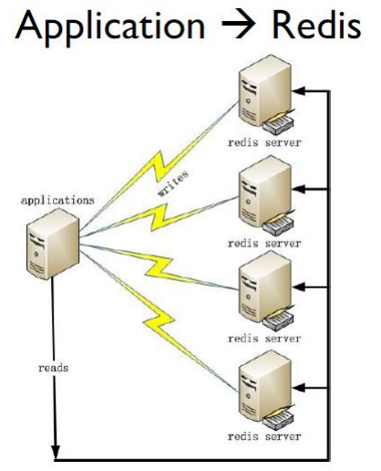

redis简介
Redis 是完全开源免费的，是一个高性能的key-value内存数据库。
中文网站 http://redis.cn
官方网站 http://redis.io
Redis 有三个主要的特点, 有别于其它很多竞争对手 ：
- Redis支持数据的持久化，可以将内存中的数据保持在磁盘中，重启的时候可以再次加载进行使用
- Redis不仅仅支持简单的
key-value类型的数据，同时还提供list，set，zset，hash等数据结构的存储 - Redis支持数据的备份，即
master-slave模式的数据备份。
Redis优点
性能极高 – Redis能读的速度是110000次/s,写的速度是81000次/s 。
支持丰富的数据类型 - Redis支持最大多数开发人员已经知道如列表，集合，可排序集合，哈希等数据类型。 这使得在应用中很容易解决的各种问题，因为我们知道哪些问题处理, 使用哪种数据类型更好解决。
- 操作都是原子的 - 所有 Redis 的操作都是原子，从而确保当两个客户同时访问 Redis 服务器得到的是更新后的值（最新值）。 原子性（atomicity）：一个事务是一个不可分割的最小工作单位，事务中包括的诸操作要么都做，要么都不做。 Redis所有单个命令的执行都是原子性的，这与它的单线程机制有关；
Redis是一个多功能实用工具，可以在很多如：
- 缓存
- 消息传递队列中使用（Redis原生支持发布/订阅），
- 在应用程序中，如：Web应用程序会话，网站页面点击数等任何短暂的数据；
Redis 实际应用案例
目前全球最大的 Redis 用户是新浪微博，公布一下Redis平台实际情况：
- 2200+亿 commands/day 5000亿Read/day 500亿Write/day
- 18TB+ Memory
- 500+ Servers in 6 IDC（互联网数据中心，机房） 2000+instances
在新浪微博 Redis 的部署场景很多，大概分为如下的 2 种:
第一种是应用程序直接访问 Redis 数据库

第二种是应用程序直接访问 Redis，只有当 Redis 访问失败时才访问 MySQL